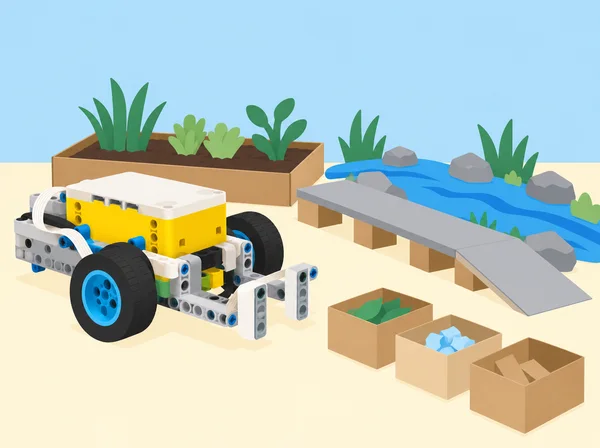

Els equips trien una necessitat documentada de l’entorn, la descomponen en parts i desenvolupen un model programat que il·lustra una possible contribució. El producte final inclou una afirmació concreta sobre el problema, fonts i persones afectades consultades amb cura, esbossos, pseudocodi, maqueta SPIKE Prime, codi documentat, proves repetides, canvis després del feedback, anàlisi de l’impacte i presentació. Aquesta situació adapta el projecte final de 500 minuts de Foundations of Physical Computing, que ofereix sis àmbits: recursos naturals, transport, salut/STEM, fabricació, gestió pública/emergències i agricultura. Cada equip tria un repte delimitat dins d’un àmbit; no cal que tots els grups inventen robots mòbils ni que automatitzen una tasca.
El model és una representació escolar, mai una màquina preparada per operar en ecosistemes, hospitals, trànsit, incendis o explotacions reals. Cap prototip transporta persones, intervé en fauna/flora, pren decisions mèdiques, actua en una emergència o gestiona substàncies i càrregues perilloses. El treball se centra en definir bé el problema, usar maquinari disponible, recollir evidència proporcionada i explicar què faltaria per provar una solució fora de l’aula.
L’equip pot triar qualsevol repte viable relacionat amb els àmbits oficials; les propostes següents són punts d’arrancada locals, no encàrrecs tancats. Abans de triar, compareu-ne l’interés, l’evidència disponible, els materials necessaris i les persones/entitats amb què caldria parlar. Si el tema tracta una necessitat d’un grup concret, no el definiu en nom seu: feu servir fonts públiques o una consulta voluntària, anònima i supervisada.
Set SPIKE Prime 45678 i dispositiu amb l’app SPIKE per parella; sensors, hub, motors i peces necessaris per a cada proposta; materials de maqueta lleugers (cartó, paper, cinta, targetes de colors mate, fitxes grans, tubs de paper i regles); ordinador/dispositiu per a recerca; diari d’enginyeria; rúbrica i calendari de sessions. No compartiu peces entre sets durant el muntatge; feu inventari ràpid a l’inici/final i registreu si falta material. Si el projecte necessita sensors externs, càmeres, transmissió a Internet, accessoris comercials o programari addicional, l’equip ha de redissenyar el prototip per al material disponible o marcar l’element com a proposta futura no provada.
Equips de 2–4 persones; ningú treballa tot sol en aquesta tasca. Rols rotatius possibles: recerca i fonts, disseny/muntatge, programació/proves, registre/comunicació. Els rols no assignen permanentment el codi a una sola persona: cada membre explica almenys un component i participa en una decisió. La docent actua de mentora mitjançant preguntes i fa revisions de fase; les revisions confirmen que l’equip pot continuar, no garanteixen que el model funcione en un ús real.
Feu una rotació breu per les sis propostes (cinc minuts de presentació per àmbit) i examineu fonts recomanades. Individualment, cada alumne anota dues preguntes o necessitats possibles sense revelar dades personals. En grup, genereu almenys tres problemes delimitats, busqueu fonts verificables i compareu qui es veu afectat, què se sap, què encara és incert i quina acció queda dins de les possibilitats escolars. Escriviu una frase de problema (“A [context fictici/espai investigat] costa… perquè…; volem explorar si…”) i dues o tres idees de solució. Definiu una persona usuària com a perfil de disseny sense atribuir-li experiències que no s’han consultat. Analitzeu interacció humà–ordinador, biaix, accessibilitat, conseqüències imprevistes, privacitat i materials. Feu un primer càlcul de viabilitat: temps disponible, set, peces, sensors i dades. Abans de continuar, mostreu a la docent problema, fonts, idea, efecte social/ambiental i límits; si falta informació o hi ha risc de confondre maqueta amb aplicació real, ajusteu la pregunta o trieu un altre repte.
Feu esbossos des de dalt i de costat, marqueu dimensions i peces que es mouen, connectors/ports, punts d’entrada i sortida, llums/sons i llocs on el sensor pren una lectura. Escriviu pseudocodi i, quan ajude, diagrama de flux; descomponeu el programa en subcomponents o blocs propis. Definiu una funció mesurable per a cada component i què constitueix un resultat correcte. El pla explica com el sensor i el motor col·laboren; no és necessari usar-los tots si el repte es resol millor amb entrada manual, llum o so. Prepareu casos de prova abans de construir, incloent almenys un cas límit i un d’error. Demaneu feedback a dos companys amb tres preguntes: s’entén què intenta fer el projecte? quina part podria fallar o excloure algú? què funciona o resulta atractiu? Registreu comentari rebut, acceptat o rebutjat i justificació. La docent revisa esbós, maquinari/programari, pseudocodi, criteris i feedback; després l’equip documenta qualsevol canvi del disseny.
Construïu una prova mínima d’un sol subcomponent i programeu una resposta observable. Abans d’afegir funcionalitats, proveu si la base o mecanisme es mou com s’espera, si la lectura del sensor és consistent en l’entorn previst i si el programa té una aturada manual clara. Documenteu una primera versió i una taula de prova amb condicions inicials, predicció, resultat i observació. Integreu subsistemes d’un en un; comenteu blocs, anomeneu variables, proveu les condicions esperades/inesperades i useu dades adequades per depurar. Feu almenys dues iteracions justificades: una pot ser mecànica (estabilitat, agarre, alineació) i una altra de programació (llindar, ordre, bucle o condició). Canvieu una variable per prova sempre que siga possible. Si la prova falla, conserveu el resultat com a evidència i decidiu si reviseu hipòtesi, mecanisme, sensor o criteri. La docent revisa codi, interacció, seguretat, registre i una iteració; l’equip no passa a la mostra fins que pot demostrar una funció reduïda i explicar-ne els límits. L’èxit és el procés informat, no una automatització completa.
Prepareu una presentació breu de 3–5 minuts amb necessitat, font principal, criteris, model, programa, una prova que funciona, una prova que ha fallat o queda pendent, feedback incorporat, efectes previstos i límits. Feu una demostració amb espai delimitat, velocitat baixa i aturada controlada; si el prototip és inestable, presenteu el vídeo només del model o executeu la prova amb simulació en paper, explicant-ho. Altres equips fan preguntes i donen una observació favorable, una pregunta i una proposta; cada equip anota quin comentari canviaria el disseny amb més temps. Avalueu el producte amb rúbrica docent/equip, després el funcionament cooperatiu i finalment la participació individual. Desmunteu els models, classifiqueu peces, feu inventari dels sets i registreu elements que falten o sobren. Cada persona pot completar una autoavaluació confidencial de contribució, feedback, temps i gestió de material; es pot respondre amb exemples del rol sense autovalorar interessos o personalitat.
Docent i equip valoren sis dimensions amb escala de tres nivells; el nivell mitjà significa que s’han complit els requisits principals, no és un judici sobre l’alumne. La rúbrica completa s’explica abans de triar el tema.
La rúbrica no exigeix incorporar cada suggeriment de feedback, un nombre fix de sensors o un motor quan no és pertinent. Valora la justificació i la qualitat de les proves en relació amb el repte que l’equip ha delimitat.
La docent examina abans els temes relacionats amb salut, dades personals, espècies protegides, emergències i transport. Useu només dades públiques, fictícies o anonimitzades; cap persona ha d’explicar una experiència mèdica, situació de desastre o necessitat personal. Demaneu permís abans de consulta; escolteu fonts d’usuari expertes sense convertir cap company en portaveu d’un grup. Les interaccions tenen alternatives (botó, instrucció visual, text, resposta manual), i el prototip no es fa passar per producte accessible acabat. Manteniu motors lents, trajecte de maqueta lliure, càrregues lleugeres i cap peça voladora; no introduïu aigua, menjar, animals, eines tallants, foc o accessos reals. Les simulacions d’emergència no alteren protocols escolars; s’usen missatges neutres de pràctica i la docent atura qualsevol activitat confusa.
Adapta el projecte final de 500 minuts de LEGO Education Foundations of Physical Computing. Conserva l’elecció entre sis àmbits (recursos naturals, transport —amb quatre opcions—, salut/STEM, fabricació, gestió pública/emergències i agricultura), la investigació i delimitació de dues o tres necessitats, quatre fases amb revisions, esbossos/ports/sensors/motors/subcomponents/llums/sons/pseudocodi, revisió entre iguals, programació i iteració, mostra final, sis criteris de rúbrica, autoavaluació i inventari. Adapta exemples que en la font proposen recollida oceànica, vehicles mèdics o de desastre a models segurs de taula; no reprodueix el manual LEGO ni afirma validar cap servei real.